Identifying a critical need for engaging and accessible digital tools in the field of cultural heritage preservation, I led the UX design for a mobile-based learning experience aimed at enhancing cultural awareness. My task involved transforming educational objectives into a compelling digital format that resonated with a modern audience.
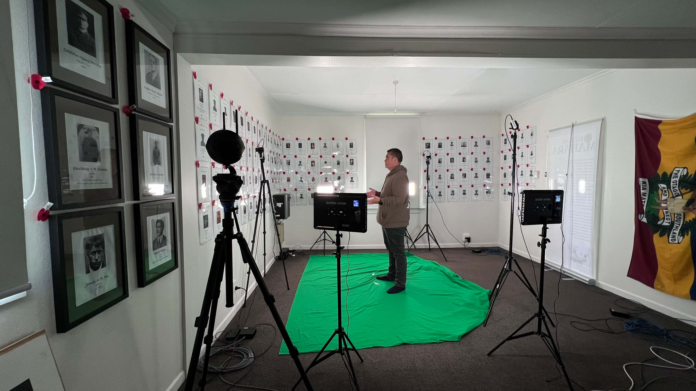
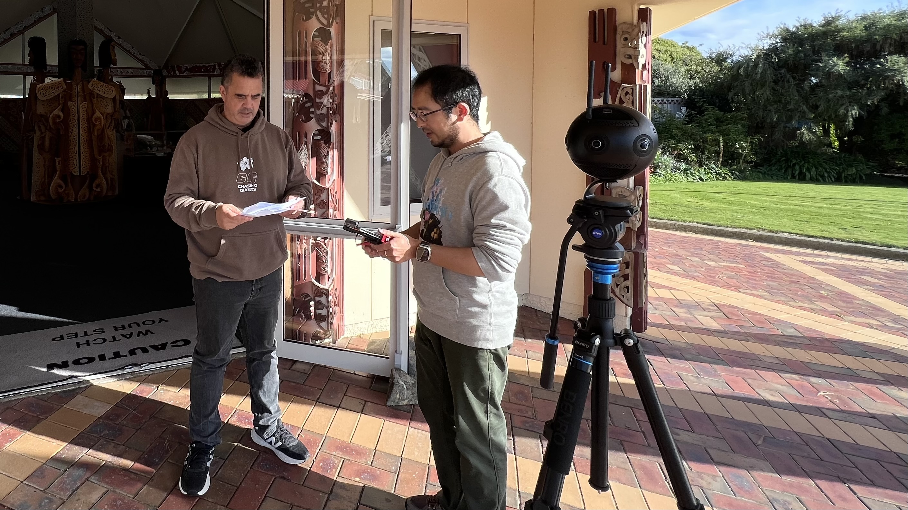
I conducted extensive user research and leveraged co-design methods to deeply understand the educational needs and cultural context of the target audience.
Based on these insights, I designed a mobile UI/UX that integrated interactive learning modules with culturally sensitive content to ensure inclusivity and engagement.
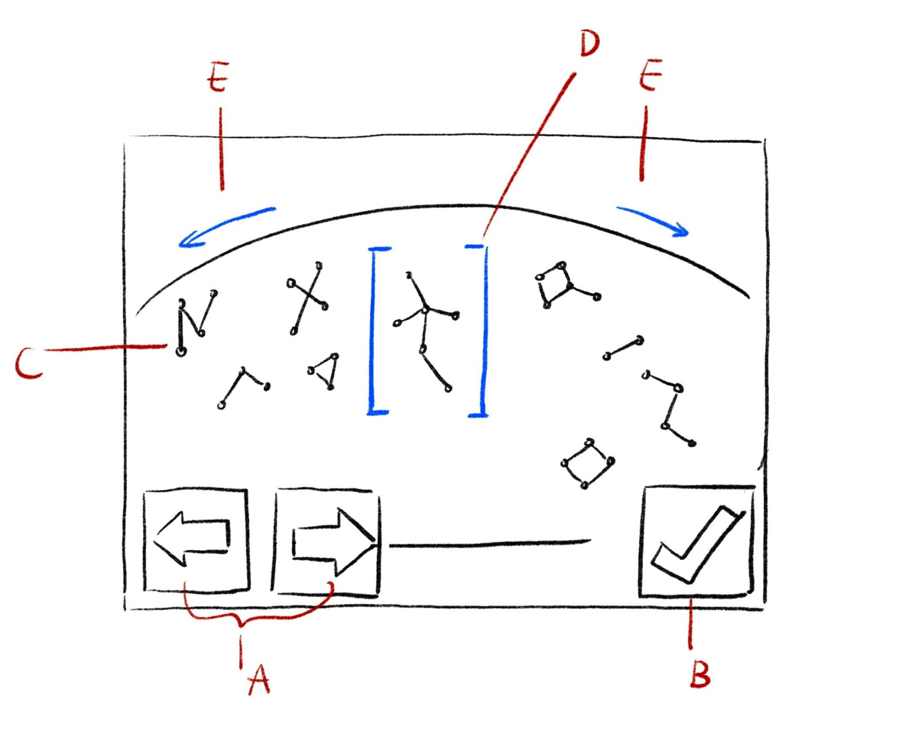
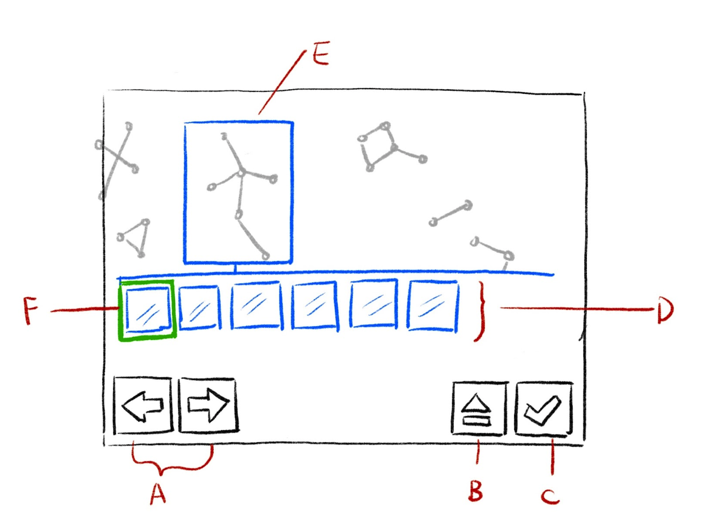
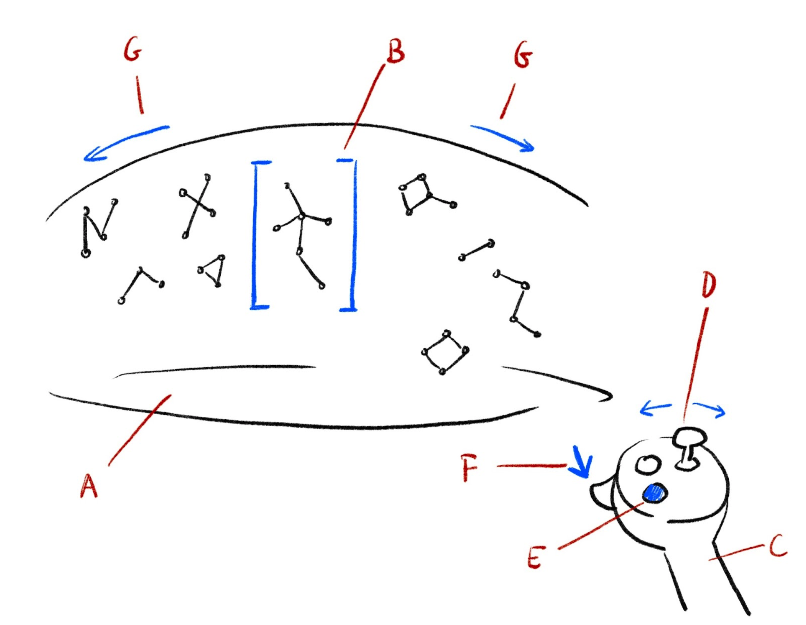
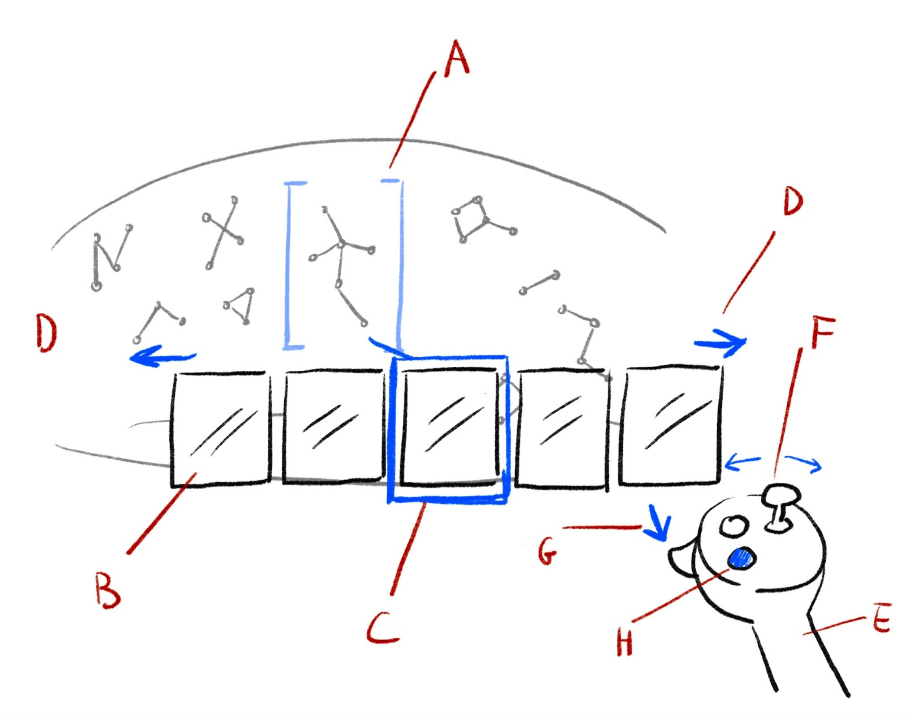
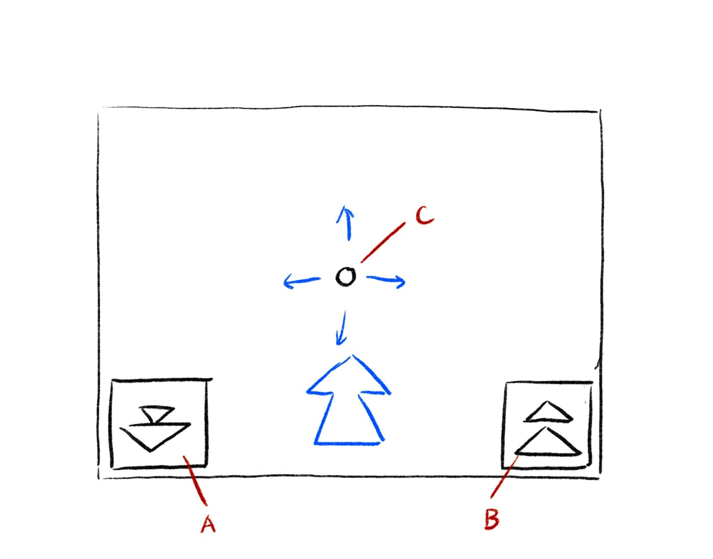
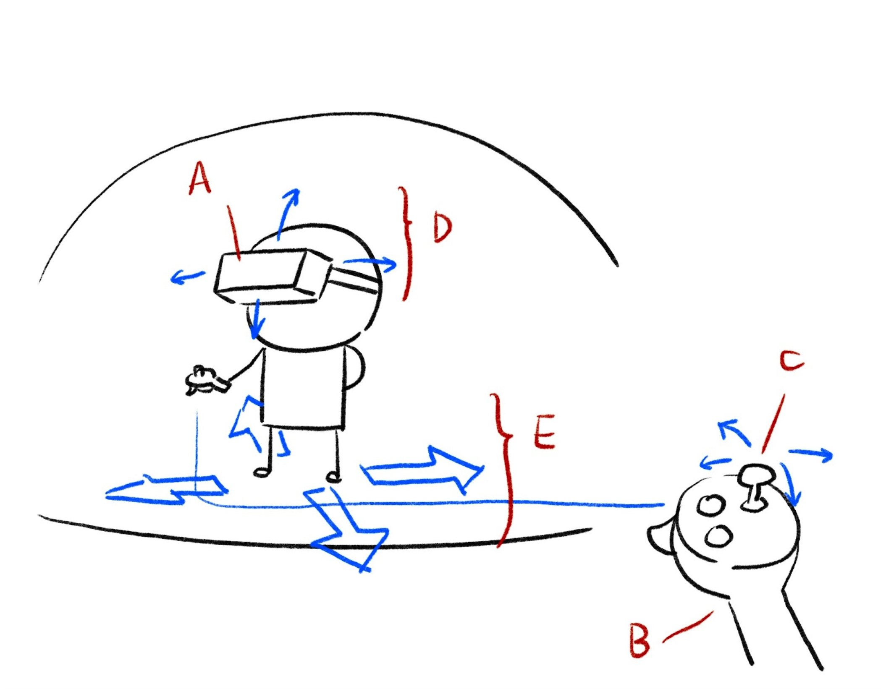
This resulted in a culturally resonant mobile learning prototype that successfully blended educational goals with engaging digital interactions.
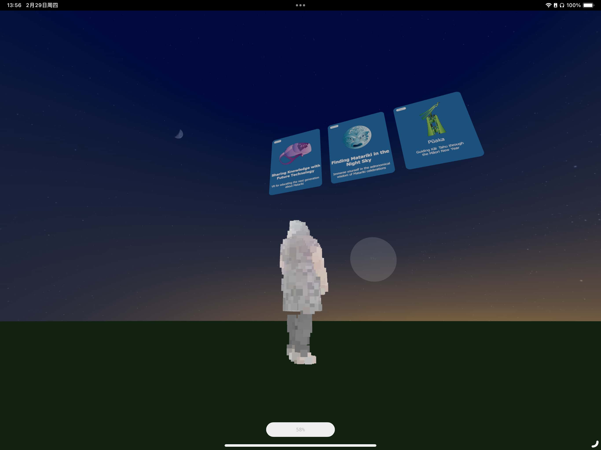
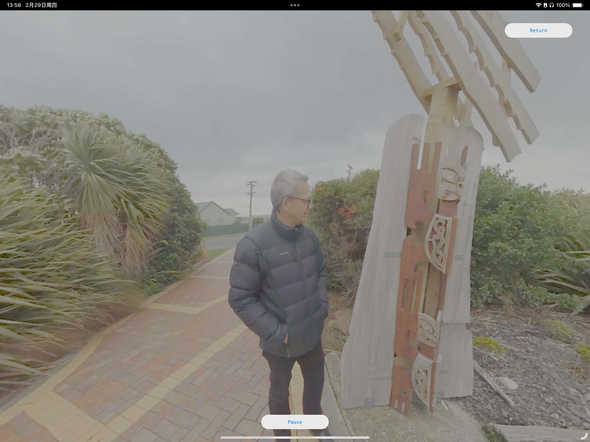
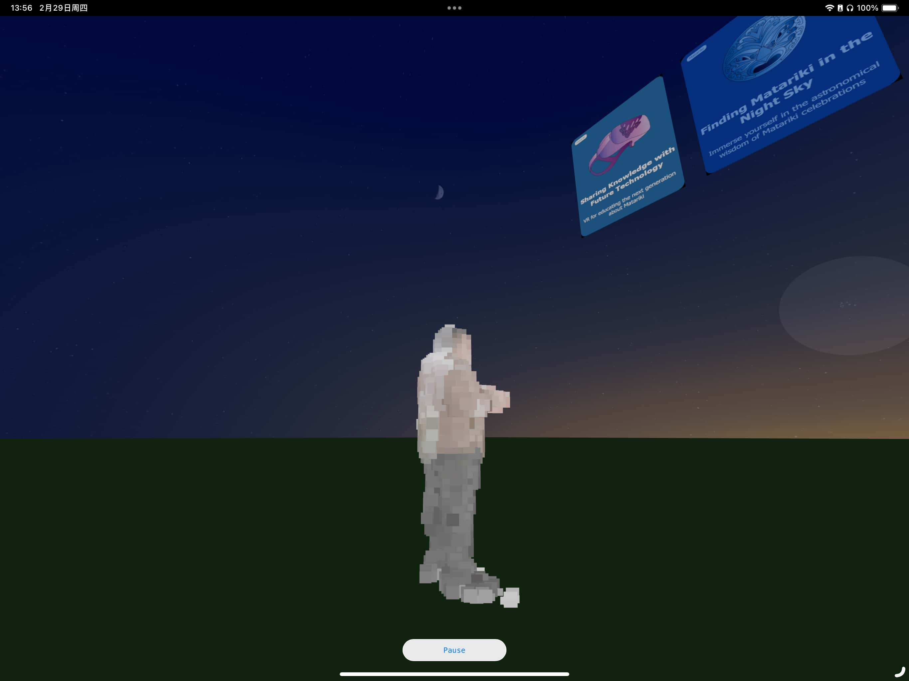
This project highlighted the importance of "warmth" in cultural technology, and I hope to apply these human-centered methodologies to empower more heritage organizations in their digital transitions.